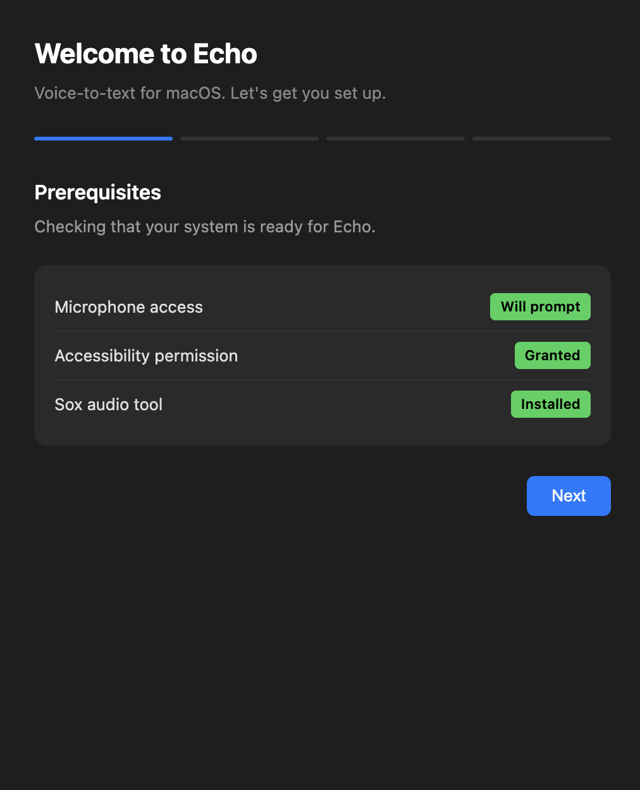
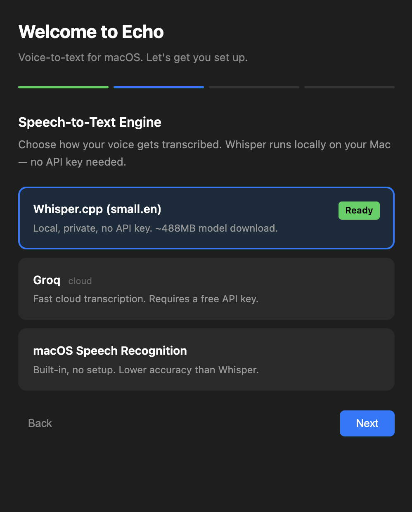
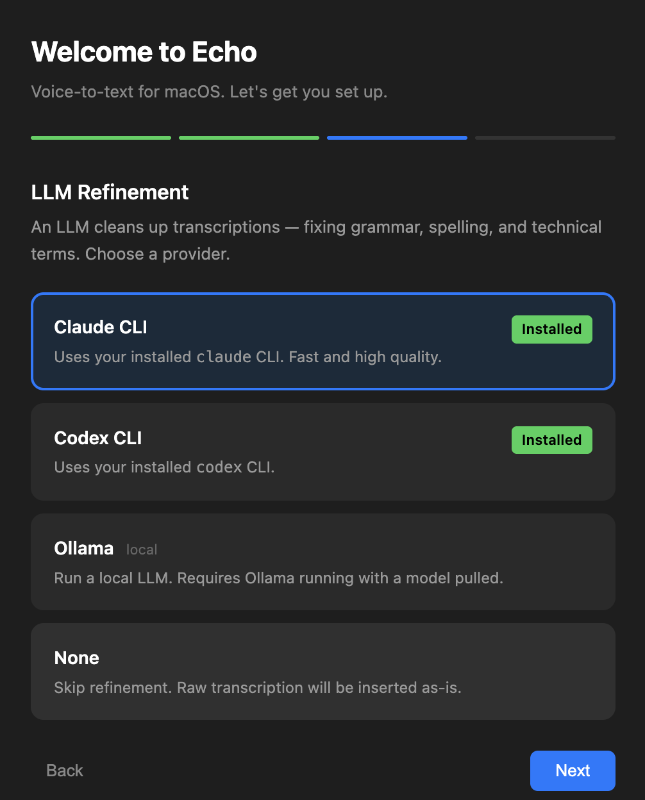
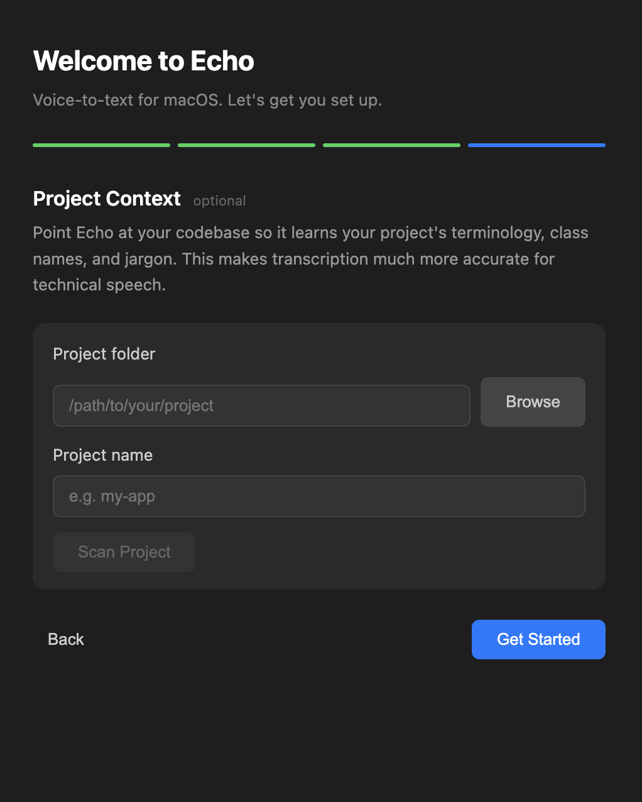

🔒
Private by default
Local Whisper plus no LLM means zero network calls. Your voice and your words never leave your Mac.
The open-source voice keyboard for macOS. Press a key, talk, and your words land — refined and ready — in any app. No account, no cloud, no catch. It all runs on your Mac.
Requires macOS · MIT licensed · No sign-up
um so like can you send the the report to sarah by uh end of day and lemme know if the api keys are still valid thanks
Can you send the report to Sarah by end of day? And let me know if the API keys are still valid. Thanks!
Works everywhere you write
Echo types into whatever window is focused — your editor, your inbox, your chat, your docs. If you can type there, you can talk there.
Features
Accurate, natural, and private — no paid services required.
Local Whisper plus no LLM means zero network calls. Your voice and your words never leave your Mac.
An LLM fixes grammar, punctuation, and filler words so dictation reads like you carefully typed it.
Custom vocabulary, auto-learned corrections, and codebase scanning teach Echo your terms and names.
Text appears in real time as you speak, then is replaced by the polished, refined version.
Hold fn, double-tap to toggle, or use a hotkey. A floating overlay shows state and waveform.
Pick your language; Echo preserves your dialect and spelling instead of Americanizing it.
How it works
Press ⌘⇧V or hold fn and start talking.
Speech becomes text via local Whisper, Groq, or macOS Speech.
An LLM cleans it up with context from your apps and vocabulary.
The final text is typed at your cursor — right where you were.
Private by design
Run Echo fully offline: local Whisper for transcription and no LLM (or a local one). In that mode it makes zero network calls — nothing to log in to, nothing to leak.
// point Echo at your repo
scan ~/code/echo
// now it knows your terms
"refactor the run_pipeline fn in lib.rs"
"check transcribeAudio in pipeline.ts"
✓ transcribed exactly — no typosFor developers
Point Echo at a codebase and it learns your class names, function names,
and project vocabulary. Technical terms get biased into the transcriber
before the LLM ever runs, so run_pipeline doesn't become
"run pipe line."
Set up in minutes
Echo walks you through permissions, Whisper setup, your LLM, and project context.




Free and open source. Clone it, run it, and never type a long message by hand again.
brew install sox
git clone https://github.com/doramirdor/echo.git
cd echo
npm install
npm startmacOS · Node 18+ · SoX · Releases →